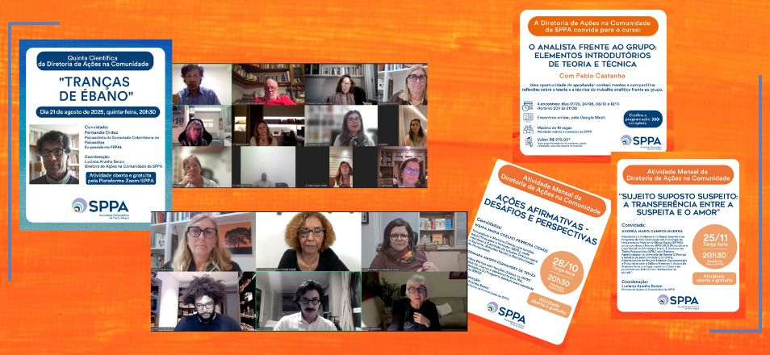
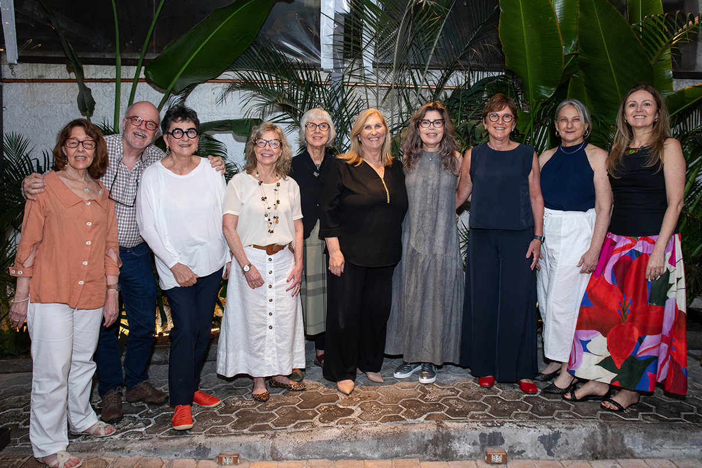

Agenda intensa de eventos marca a atuação da Diretoria de Ações na Comunidade
- 
 FALTA LEGENDA
FALTA LEGENDA
A Diretoria de Ações na Comunidade da Sociedade Psicanalítica de Porto Alegre (SPPA), coordenada por Luciana Aranha Secco, reafirma seu compromisso social ao promover uma intensa agenda de eventos, cursos e parcerias, pautando o diálogo da psicanálise com questões sociais urgentes.
Reflexões e eventos centrais - A programação da Diretoria destacou-se com o evento "Por um Espelho Social Negro na Psicologia" realizado em junho, que contou com a participação de Iyá Sandrali Bueno, psicóloga, escritora e autoridade civilizatória da tradição de matriz africana e afrodiaspórica, a qual apresentou um essencial debate sobre representatividade e inclusão. Já em agosto, a Quinta Científica "Tranças de Ébano" trouxe o renomado psicanalista Fernando Orduz (ex-presidente da FEPAL e membro da Sociedade Colombiana de Psicanálise). No mesmo mês, o SPPA Portas Abertas convidou o público a conhecer a história da Sociedade, bem como seus projetos científicos e sociais, além da proposta de formação psicanalítica. A Diretoria de Ações na Comunidade teve a satisfação de participar dessa atividade, que sempre é promovida pela Diretoria de Psicanálise na Cultura da SPPA.
A Diretoria também marcou presença na Reunião do Comitê de Estudos e Intervenções Psicanalíticas em Situações de Crise e Catástrofe, realizada em setembro, com a coordenação de Katia Wagner Radke (Presidente da SPPA), ao lado de Luciana Aranha Secco, sublinhando a atuação da Psicanálise em contextos de emergência social.
Formação e Trabalho com Grupos - Segue em andamento o curso “O Analista Frente Ao Grupo: Elementos Introdutórios de Teoria e Técnica”, ministrado por Pablo Castanho (Professor da USP e membro do NESME). O curso oferece uma oportunidade de aprofundamento no trabalho analítico em contextos coletivos, com quatro encontros até o final de novembro.
Parcerias Estratégicas e Atuação na Educação - A parceria com o Núcleo de Psicanálise, Educação e Cultura da Ufrgs (Nuppec) culminou na IV Jornada do Nuppec, ocorrida em outubro. O tema central, "Mal-Estar e Sofrimento Psíquico na Escola e Universidade: Impasses do Saber e de sua transmissão", contou com membros da SPPA, Nuppec e Appoa em mesas que abordaram o sofrimento psíquico de estudantes e professores, com a participação de Denise Vivian Lahude, e a deserotização do saber e os efeitos para educação, com a presença de Alice Becker Lewkowicz.
A atuação da comunidade nesse ciclo foi encerrada com o Fórum pela Inclusão da UFRGS, também realizado em outubro, o qual apresentou o tema “Territórios da Resistência: A Construção de um Serviço de Promoção da Vida na Educação”. O evento contou ainda com a presença da psicanalista Denise Lahude, seguida por cinco rodas de conversa na UFRGS, realizadas em parceria com a Faculdade de Educação (Faced). O grupo Nhamandu segue com as atividades de Roda de Conversa no projeto WinBelémDom e pequena casa da criança.
SPPA em congresso - No 30º Congresso Brasileiro de Psicanálise da FEBRAPSI, cujo tema foi “Sexualidade: o tumulto das diferenças”, a Diretoria de Ações na Comunidade, juntamente com os grupos Rodaviva e Nhamandu, participou com um poster sobre a Clínica Social da SPPA. Ainda neste Congresso, a mesma diretoria promoveu a mesa “Diálogo Interdisciplinar – A violência que atravessa a sexualidade.” A psicanalista Flavia Maltz (SPPA) fez a leitura do texto, representando os grupos Nhamandu e Roda Viva, compondo a mesa com as convidadas Liliane Giordani (Faced/UFRGS) e Gabriela Bercht (UFRGS/EMEF Morro da Cruz).
Atividades Mensais - A Diretoria de Ações na Comunidade realizou também encontros mensais em outubro e novembro do presente ano. O primeiro teve como título “Ações Afirmativas – Desafios e perspectivas”, com a participação das psicanalistas Wânia Maria Coelho Ferreira Cidade (SBPRJ) e Josimara Magro Fernandez de Souza (SBPRP), sob a coordenação de Luciana Aranha Secco. Encerrando as atividades da gestão dessa diretoria, em novembro, Andrea Guerra abordou o tema da branquitude, atividade que teve como título “Sujeito suposto suspeito - a transferência entre o sujeito e o amor.”